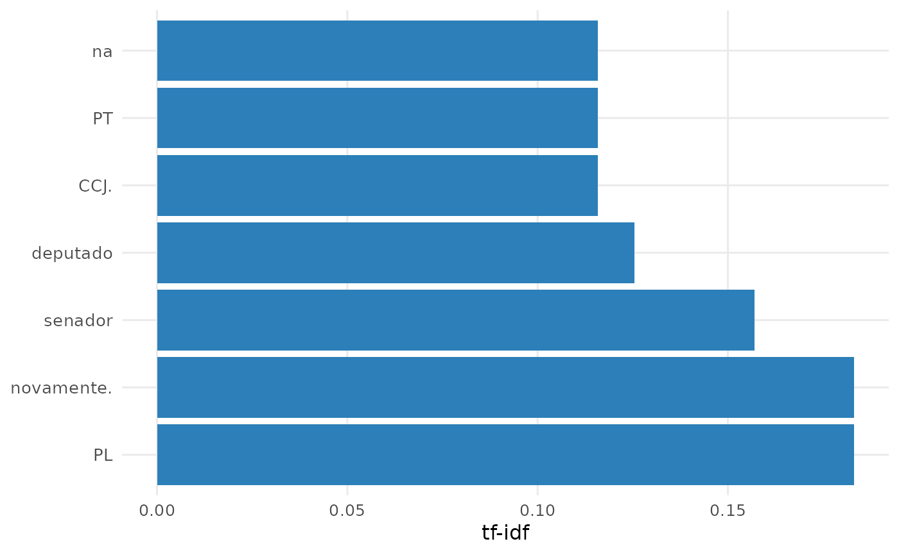
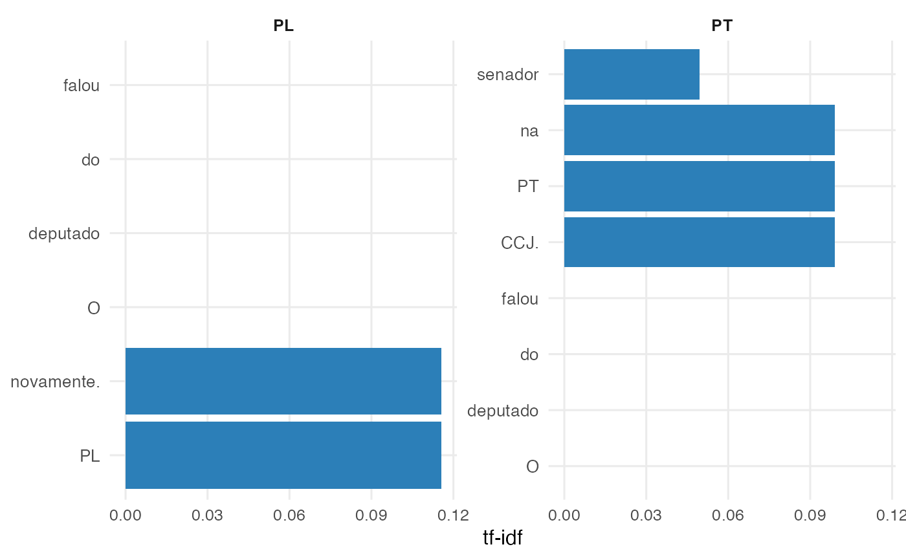

ac_plot_tf_idf() cria um grafico de barras com os termos mais
caracteristicos a partir de uma tabela com a coluna tf_idf, tipicamente
gerada por ac_tf_idf().
A funcao usa ggplot2 como base e pode, opcionalmente, aplicar o
estilo editorial do pacote ipeaplot.
Usage
ac_plot_tf_idf(
x,
by = NULL,
n = NULL,
style = c("default", "ipea"),
flip = TRUE
)Arguments
- x
Um
data.frameoutibble::tibble()contendo, no minimo, as colunastokenetf_idf.- by
Vetor de nomes de colunas em
xa serem usados como grupos de facetas. SeNULL(padrao), produz um unico grafico. Se nao forNULL, cria facetas por combinacao das colunas informadas.- n
Numero de termos a exibir. Se
NULL(padrao), usa todas as linhas dex. Se informado, seleciona os topntermos portf_idfno geral ou em cada grupo definido porby.- style
Estilo grafico. Pode ser
"default"(padrao) ou"ipea". Quando"ipea", a funcao tenta aplicaripeaplot::theme_ipea().- flip
Logico. Se
TRUE(padrao), usa barras horizontais comggplot2::coord_flip().
Examples
df <- data.frame(
id = c("d1", "d2", "d3"),
texto = c(
"O deputado do PT falou na CCJ.",
"O deputado do PL falou novamente.",
"O senador do PT falou na CCJ."
),
partido = c("PT", "PL", "PT"),
stringsAsFactors = FALSE
)
corp <- ac_corpus(df, text = texto, docid = id, meta = partido)
freq <- ac_count(corp)
tfidf <- ac_tf_idf(freq)
ac_plot_tf_idf(tfidf, n = 10)

freq_by <- ac_count(corp, by = "partido")
tfidf_by <- ac_tf_idf(freq_by, by = "partido")
ac_plot_tf_idf(tfidf_by, by = "partido", n = 5)
